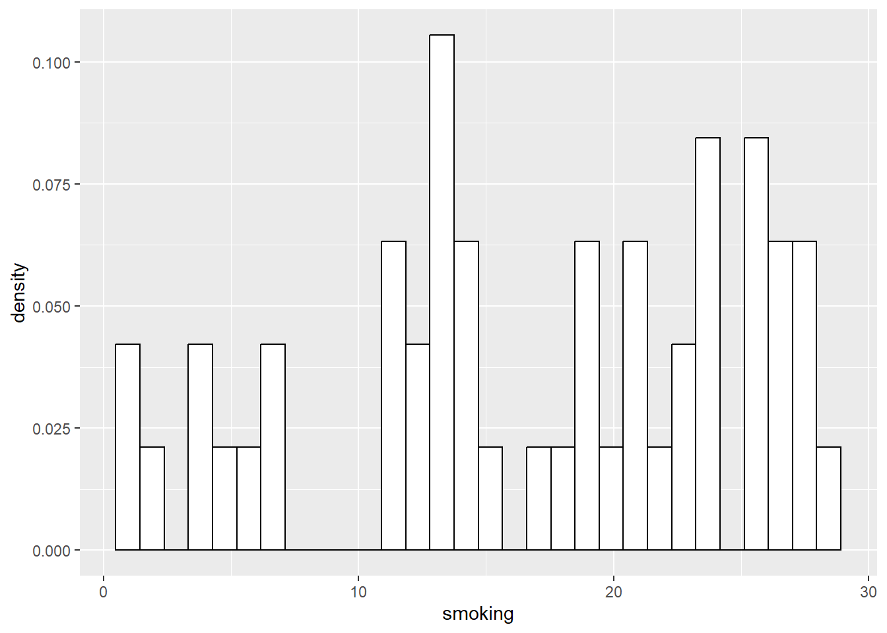
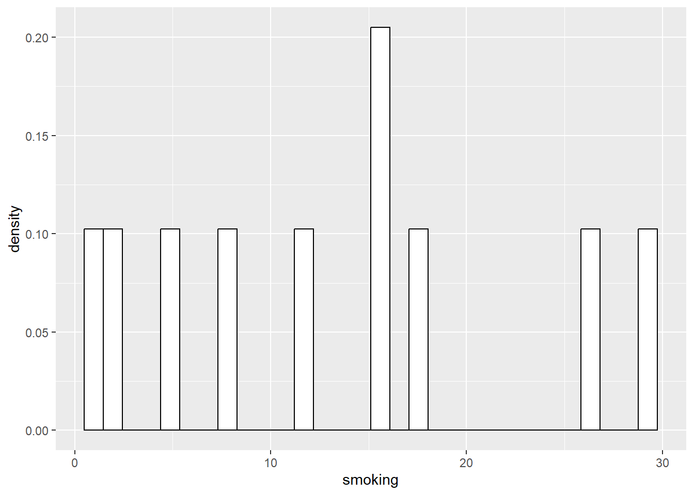
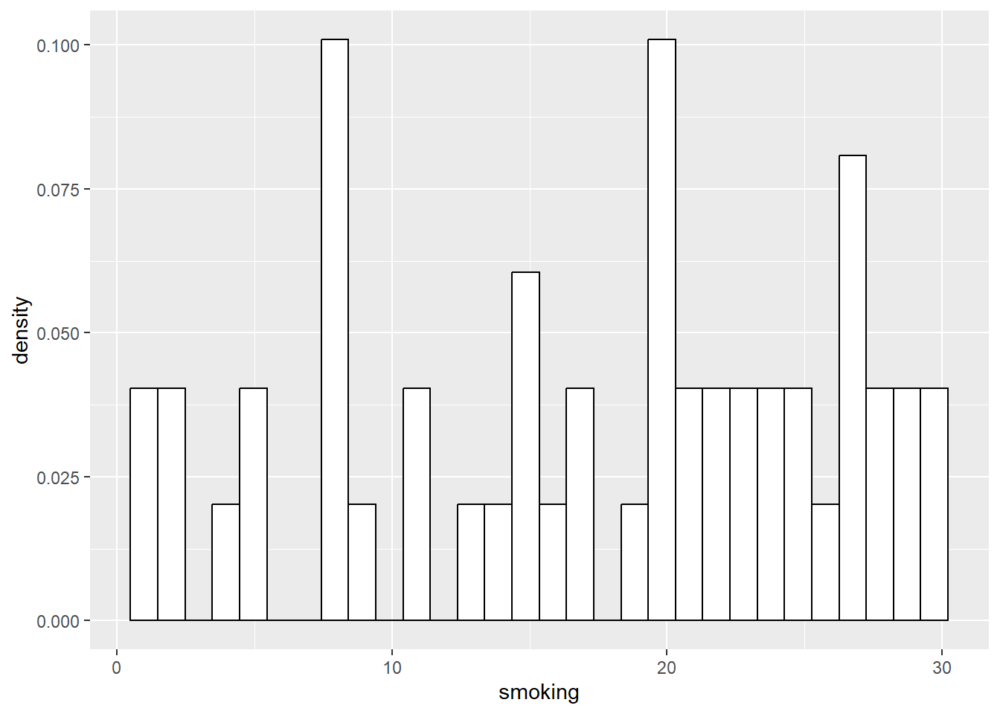
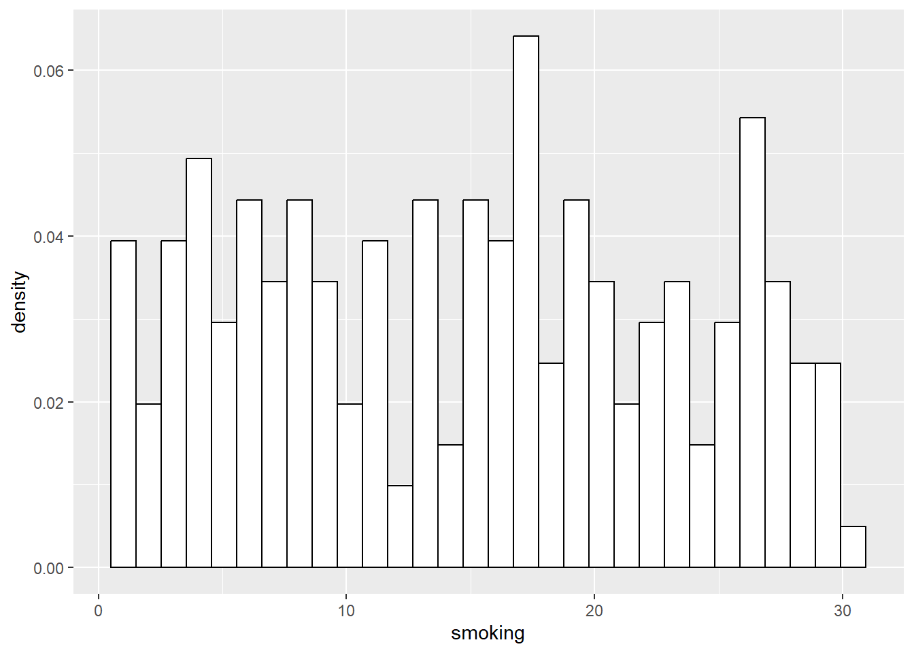

Chapter 4 Understanging Uncertainty
First, let’s grab some data.Here, we will again use the simple three-variable set of simulated data, which represents rates of smoking, rates of cycling, and heart disease incidence. This data is available from: https://www.scribbr.com/statistics/linear-regression-in-r/
## # A tibble: 6 × 4
## ...1 biking smoking heart.disease
## <dbl> <dbl> <dbl> <dbl>
## 1 1 30.8 10.9 11.8
## 2 2 65.1 2.22 2.85
## 3 3 1.96 17.6 17.2
## 4 4 44.8 2.80 6.82
## 5 5 69.4 16.0 4.06
## 6 6 54.4 29.3 9.55A slightly different way to look at the data can be done using the Skimr package…
| Name | Heart |
| Number of rows | 498 |
| Number of columns | 4 |
| _______________________ | |
| Column type frequency: | |
| numeric | 4 |
| ________________________ | |
| Group variables | None |
Variable type: numeric
| skim_variable | n_missing | complete_rate | mean | sd | p0 | p25 | p50 | p75 | p100 | hist |
|---|---|---|---|---|---|---|---|---|---|---|
| …1 | 0 | 1 | 249.50 | 143.90 | 1.00 | 125.25 | 249.50 | 373.75 | 498.00 | ▇▇▇▇▇ |
| biking | 0 | 1 | 37.79 | 21.48 | 1.12 | 20.20 | 35.82 | 57.85 | 74.91 | ▇▇▇▆▇ |
| smoking | 0 | 1 | 15.44 | 8.29 | 0.53 | 8.28 | 15.81 | 22.57 | 29.95 | ▆▆▇▆▆ |
| heart.disease | 0 | 1 | 10.17 | 4.57 | 0.55 | 6.51 | 10.39 | 13.72 | 20.45 | ▃▇▇▇▂ |
Let’s calculate some simple summary statistics from this data set to build on. For example, what is the mean and median for ‘smoking’?
## Min. 1st Qu. Median Mean 3rd Qu. Max.
## 0.5259 8.2798 15.8146 15.4350 22.5689 29.9467There we go. Let’s start to build a table using these values, in the slide deck…
4.1 Back to slides…
Now, we know this is simulated data, but let’s imagine that it was actually obtained by an organization like Gallup, or the Office for National Statistics in the UK, using a survey. We can presume the study was done well, and thus it is based on a true random sampling method, and that we assume the study population matches whatever target population we have in mind (remember the ‘inference gaps’).
What we really want to know is, how close are these statistics (i.e. the mean and median) to the true population values that we would have found if we could survey the entire target population?
Let’s demonstrate this using an example. First, let’s assume that this sample of 498 people actually now is the population we are interested in. So, we can actually sample from this population and see what happens.
First, let’s present the distribution for the entire ‘population’ of 498.

Now, let’s actually take a sample of 10 random cases from that population of 498, and look at the relevant statistics and distribution::
## # A tibble: 10 × 4
## ...1 biking smoking heart.disease
## <dbl> <dbl> <dbl> <dbl>
## 1 106 22.5 7.70 11.7
## 2 135 70.3 26.2 5.24
## 3 121 65.6 14.1 4.04
## 4 362 49.9 3.86 5.33
## 5 462 34.8 29.8 13.4
## 6 286 25.7 23.3 13.6
## 7 274 55.4 17.2 7.23
## 8 304 40.6 2.78 6.57
## 9 62 11.5 6.74 14.6
## 10 365 59.9 22.9 7.32## [1] 15.65524## [1] 15.45941
We can do the same for successively larger samples, say 50, and 200:
## # A tibble: 50 × 4
## ...1 biking smoking heart.disease
## <dbl> <dbl> <dbl> <dbl>
## 1 326 44.6 17.2 8.31
## 2 25 30.4 17.0 12.4
## 3 483 36.1 13.8 9.73
## 4 186 45.6 20.6 9.80
## 5 354 2.98 3.84 15.2
## 6 3 1.96 17.6 17.2
## 7 219 71.0 15.3 4.08
## 8 162 22.3 23.2 15.9
## 9 81 64.4 10.5 4.57
## 10 70 22.9 24.6 16.2
## # ℹ 40 more rows## [1] 15.07986## [1] 14.53667
## # A tibble: 200 × 4
## ...1 biking smoking heart.disease
## <dbl> <dbl> <dbl> <dbl>
## 1 90 34.7 8.64 8.33
## 2 389 21.5 4.76 10.4
## 3 288 45.5 25.8 10.9
## 4 404 24.8 6.51 11.6
## 5 371 26.3 26.7 15.1
## 6 466 60.6 23.8 5.98
## 7 59 57.2 12.8 5.31
## 8 240 21.6 9.35 14.0
## 9 239 61.4 22.9 6.84
## 10 285 61.9 26.3 6.86
## # ℹ 190 more rows## [1] 15.34373## [1] 15.34373
As you can see, the distributions of the smaller samples are more peaky and bumpy, because they are very sensitve to individual data points. As the sample gets larger, it starts to look more like the population right?
We can build a table now in the slides of the sample statistics (mean and median) showing that in general, as we get closer to the population size, the statistics get closer too.